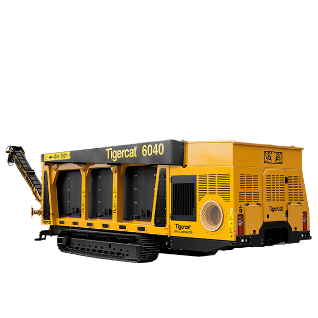

Volume reduction of organic wood debris
Of available carbon sequestered
Secondary-combustion chamber temperature
A near carbon-negative emissions process
The 6040 carboniser is unique to the industry — providing environmentally sound, productive on-site conversion and reduction of wood debris. It takes forestry and land-clearing residue with no preprocessing and returns a high-quality organic carbon product, while combusting released gases in a controlled secondary zone for very low emissions.
Instead of burning slash in the open or hauling low-value fibre off site, the carboniser reduces total volume by up to 90% and locks away carbon for beneficial reuse — spread on site at no cost, or moved at low cost.

A dual-airflow system directs the trajectory, volume and velocity of air to create a vortex that combusts the released gases — a negative-emissions process yielding a near-pure carbon product.
Thermal ceramic sidewalls maintain consistently high chamber temperatures throughout the burn.
Gases are held in the secondary combustion vortex for 3–4 seconds to achieve full combustion.
Under-air pressure and over-air swirl create a vortex that mixes and burns the released gases.
Integrated bolt-on discharge conveyor with a 105° swing and 3.65 m (12 ft) clearance for easy handling of the organic carbon output. Stows within the machine envelope for convenient road transport.
A purpose-built operating and telematics system gives a simple, intuitive operator experience. Temperature sensors throughout monitor carbonizing performance, with powerful diagnostics and logged operating data.
Reliable water delivery from tanks, trucks or external sources. An auger trough bath quenches the carbon with smart level sensors. Optional sprinkler covers an 11 m (35 ft) radius; optional cold-weather plumbing package.
Simple and easy to operate, with remote control and live-stream video monitoring so the burn can be watched and managed safely from a distance.
| Operating weight | 37 650 kg (83,000 lb) |
|---|---|
| Width | 3.66 m (12 ft) |
| Engine power | 151 kW (202 hp) |
| Conveyor swing | 105° · 3.65 m (12 ft) clearance |
| Volume reduction | Up to 90% |
| Carbon sequestered | Up to 30% of available carbon |
Figures are for the Tigercat® 6040 Carbonizer platform we operate. Specifications are indicative — confirm current figures for your configuration when you enquire.
Tell us about your residue volumes and location and we'll scope on-site carbonising — reducing fibre, cutting haulage and producing a carbon product you can reuse.